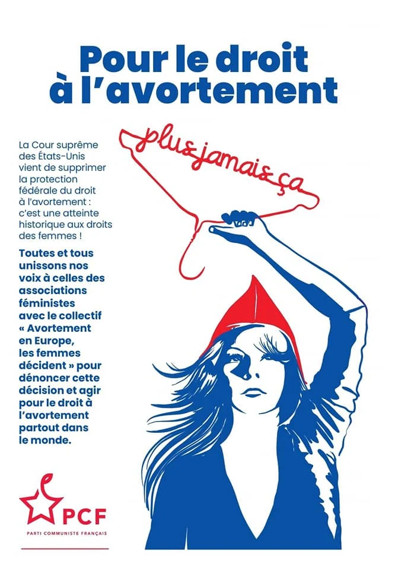
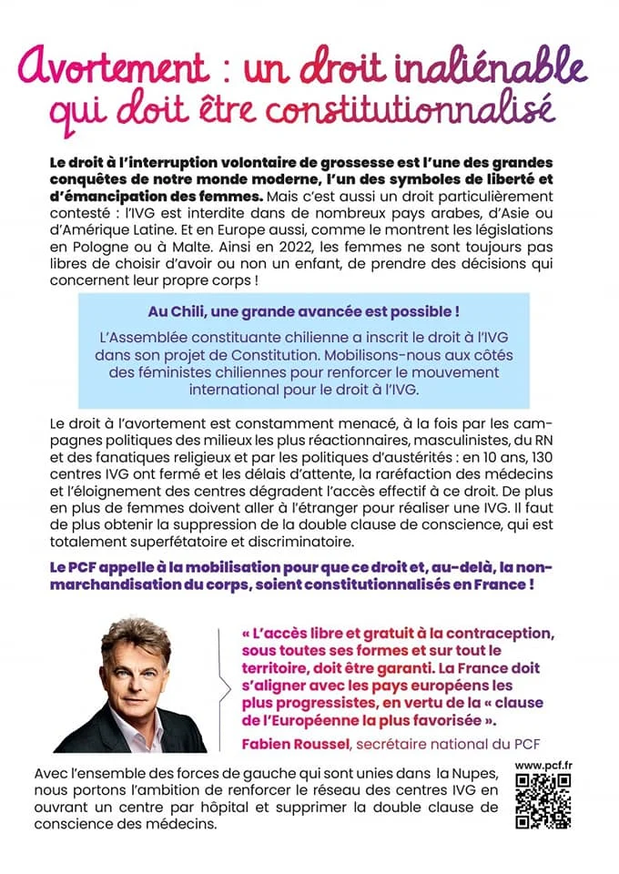

Publication d’archives
Avortement, un droit inaliénable qui doit être constitutionnalisé.
Date indiquée par Facebook · 2 juillet 2022
Texte conservé avec la publication
Contexte du dossier
Le 25 juin, le texte communiste réagit à la remise en cause de la protection constitutionnelle de l’avortement par la Cour suprême des États-Unis. Il souligne le risque d’une inégalité accrue : voyager pour accéder à une IVG suppose de l’argent, et les femmes des classes populaires seraient les premières pénalisées. Il exprime sa solidarité avec les mobilisations et alerte sur d’autres reculs possibles. Le 2 juillet, la revendication est prolongée par un message demandant la constitutionnalisation de ce droit. Ces prises de position de 2022 appellent une garantie durable ; elles ne décrivent pas les évolutions juridiques ultérieures.


Sources
Archive rouge · export Facebook · AR-0002-FB-01866
À lire aussi · Contre les violences sexistes et sexuelles, le PCF se joint à l'appel à manifester du collectif #NousToutes le…